Oyunun sonuna Ay'a kadar giden bir uzay yarışı ekleyen bir mod. Yanında yeni hükümet yasaları, çekirdekleme, iki teknoloji konseyi ve birkaç kısayol var. Yeni odak ağacı ya da büyük değişiklik yok; vanilla oyunun üstünde çalışıyor. Arkadaşlarla çok oyunculu oynamak için yaptık, tek başına da oynanıyor.
- Durum
- Geliştiriliyor (0.12.5)
- Oyun sürümü
- 1.19.3, vanilla
- İndirme
- Henüz yok
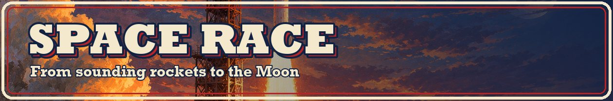
Oyundaki balistik füze projesinden sonra açılan altı özel proje (Götterdämmerung gerekiyor). Bir adımı ilk bitiren ülke istikrar kazanıyor, yarıştaki diğerleri biraz kaybediyor. Sonradan bitirenler de daha küçük bir ödül alıyor. Yapay zekâ da yarışıyor.
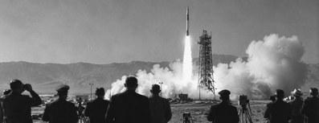
1Sondaj Roketi
Balistik füzeden sonra. 180–315 gün.
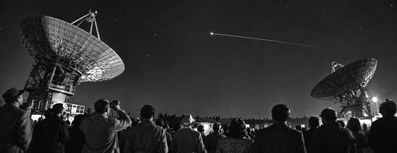
2Yapay Uydu
Sondaj roketinden sonra. 300–420 gün.
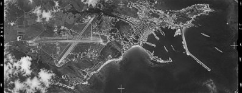
3Keşif Uydusu
Yapay uydudan sonra. 180–315 gün.
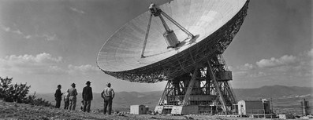
4Haberleşme Uydusu
Yapay uydudan sonra. 180–315 gün.
- 5
İnsanlı Uçuş
Yapay uydudan sonra. 420–600 gün.
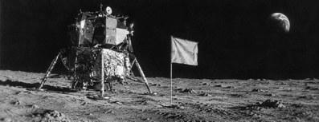
6Ay'a İniş
Diğer üç adım bitince. 420–600 gün.
Süreler yalnızca prototip aşaması için; bilim insanı, ikmal ve kaynaklara göre değişiyor.
Haberler
Her adım bütün dünyaya haber olarak düşüyor. Başaran ülkeye ayrı bir olay geliyor; Ay'a biri ulaşınca kaybedenlere de.
Ulusal ruhlar
Uydu ağları için bonuslar, uzaya ve Ay'a ilk çıkana birer ruh, geride kalanlara iki yıllık "Uzay Yarışının Kaybedeni".
Hava atılımları
Her adım hava atılım puanı istiyor ve bitince puan veriyor. Yani uzay yarışı öteki özel projelerinle aynı kaynak için yarışıyor.
Program adları
ABD'de Project Apollo, Sovyetlerde Lunar Soviet Programme, Almanya'da Mondprogramm, İngiltere'de British Lunar Programme, Japonya'da Tsukuyomi Programme. Diğer ülkelerde genel bir ad.
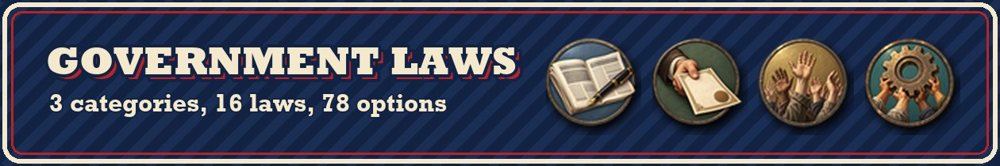
Politika ekranına üç yeni kategori geliyor: 16 yasa, toplam 78 seçenek, her birinin kendi simgesi var. Seçenekler ideolojine ve durumuna göre açılıyor. Örneğin "Capitalist Elite" yalnızca demokratik ABD ya da İngiltere için, basın yasası değişikliği 70 günde yürürlüğe giriyor, bazı seçenekler belirli ülkelere özel.
Askerî seferberlik
Askerlik muafiyeti, hizmet sınırı, askere alma yaşı, emeklilik yaşı, kadınların askerlik hakları.
Hükümet politikaları
Basın yasası, kitle iletişimi, nüfus artışı, bütçe önceliği, sanayi mülkiyeti, savaş tahvilleri.
Ulusal karakter
Kolluk, otoritenin kaynağı, kadının hukuki durumu, toplumsal düzen, savaş gerekçesi.
Yapay zekânın bu yasaları kullanıp kullanmayacağını "AI Use of Government Policies" oyun kuralı belirliyor. Varsayılan "Players Only", yani yapay zekâ seni şaşırtmıyor.
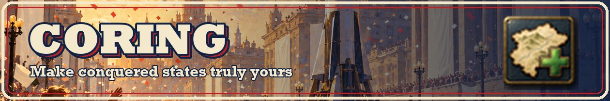
Eyalet ekranındaki "Core state" düğmesi, fethettiğin bir eyaleti siyasi güç karşılığında çekirdek eyaletin yapıyor. Kuralları Custom Game Rules → Sellennia's Helpers: Coring altında seçiyorsun.
Fiyat
Eyaletteki her 5 bin, 10 bin, 20 bin ya da 40 bin kişi için 1 siyasi güç (varsayılan 20 bin). En az 1, en fazla 2.000. Eyalette hak iddian varsa fiyat yarıya iniyor.
Gereken uyum
%20 ile %100 arası; varsayılan %80.
Kontrol
Varsayılan olarak eyalet senin olmalı ve kontrolünde olmalı. İstersen işgal de yetiyor.
Hak iddiası
Varsayılan olarak her eyalet olur. İstersen yalnızca hak iddia ettiğin eyaletlerle sınırlayabilirsin.
Teknoloji konseyleri
Üyeler arasında araştırma paylaşan iki konsey. Bir ülke yalnızca birine girebiliyor; Finlandiya ikisine de davet edildiği için seçim yapmak zorunda.
Türk Teknoloji Konseyi
Türkiye "Improved Computing Machine"i araştırınca kurabiliyor. Haritadaki Türk ülkeleri, Macaristan ve Finlandiya bir dünya haberiyle davet ediliyor; her biri kabul ya da ret diyor. Sonradan kurulan ülkeler karar ekranından katılabiliyor.
Türkiye'ye ayrıca bir sanayi seçeneği geliyor: Devletçilik.
İskandinav Teknoloji Konseyi
Aynı sistem kuzeyde. İsveç kuruyor; Norveç, Danimarka, İzlanda ve Finlandiya davet ediliyor.
Kurallar
Katılmak siyasi güç ve kalıcı bir katkı (+%2 tüketim malı) istiyor. İkinci üye katılınca üye başına %10 araştırma paylaşımı başlıyor.
Üye istediğinde ayrılabiliyor ama geri dönmek yine tam fiyat. Başka bir üyeye saldıran konseyden atılıyor. İki üyenin altına düşen konsey dağılıyor.
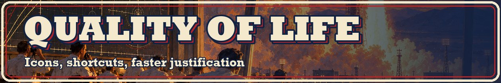
Açıklayıcı simgeler
Ekipman değerleri, bonuslar ve binaların yanında küçük simgeler. Açılır pencereler bir bakışta okunuyor.
Hızlı gerekçe
Savaş gerekçesi neredeyse bedava. Çok oyunculu oyunlarda kimse beklemiyor.
Kısayollar
Shift+F ittifak ekranını açıyor. Bir müttefikin diplomasi ekranında Shift+I o ülkenin lojistik ekranını açıyor.
Yükleme ekranları
Modla birlikte altı yükleme ekranı geliyor. Ana menüde sağ alttaki "Change background"dan seçiliyor.

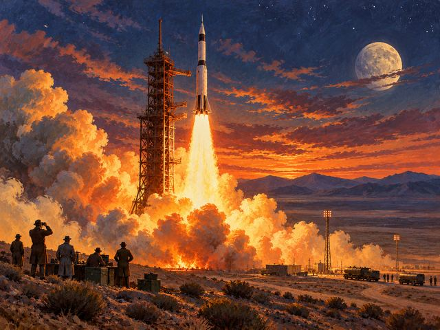

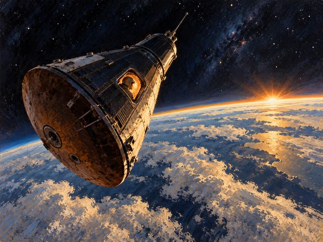


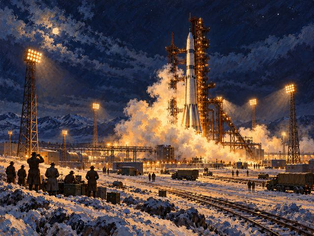

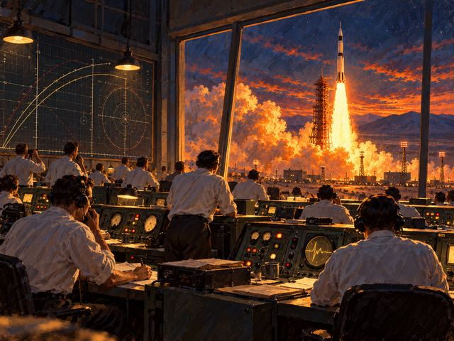

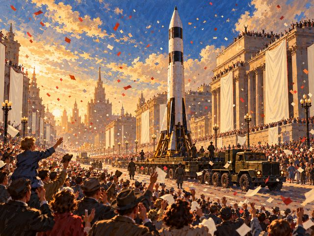
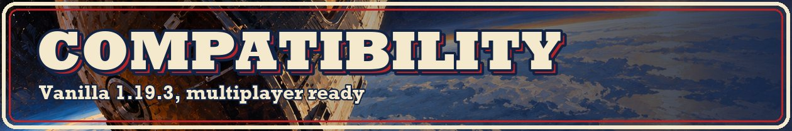
- Hearts of Iron IV 1.19.3 ve vanilla oyun için. Uzay Yarışı Götterdämmerung istiyor.
- Çok oyunculuda herkeste modun aynı sürümü olmalı. Oyun kurallarını kurucu oyunu başlatmadan önce seçin.
- Büyük dönüşüm modlarıyla ve politika ya da eyalet ekranını değiştiren modlarla çalışmıyor.
- Descriptive Icons, Core With Compliance++ ya da Fast Justification'ı ayrıca açma; özellikleri zaten bu modun içinde.
- Oyunun ortasında mod değiştirmek desteklenmiyor. Yasaları ya da projeleri değiştiren bir güncellemeden sonra yeni oyun başlat.
İndirme
Mod henüz Steam Workshop'ta değil. Yayınlanınca bağlantı buraya gelecek.